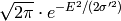
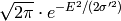

SassenaFFT dialog.
Table of Contents
| Name | Direction | Type | Default | Description |
|---|---|---|---|---|
| InputWorkspace | InOut | WorkspaceGroup | Mandatory | The name of the input group workspace |
| FFTonlyRealPart | Input | boolean | False | Do we FFT only the real part of I(Q,t)? (optional, default is False) |
| DetailedBalance | Input | boolean | False | Do we apply detailed balance condition? (optional, default is False) |
| Temp | Input | number | 300 | Multiply structure factor by exp(E/(2*kT) |
The Sassena application generates intermediate scattering factors from molecular dynamics trajectories. This algorithm reads Sassena output and stores all data in workspaces of type Workspace2D, grouped under a single WorkspaceGroup. It is implied that the time unit is one picosecond.
Sassena ouput files are in HDF5 format, and can be made up of the following datasets: qvectors, fq, fq0, fq2, and fqt
The group workspace should contain workspaces _fqt.Re and _fqt.Im containing the real and imaginary parts of the intermediate structure factor, respectively. This algorithm will take both and perform FFT v1, storing the real part of the transform in workspace _fqw and placing this workspace under the input group workspace. Assuming the time unit to be one picosecond, the resulting energies will be in units of one micro-eV.
The Schofield correction (P. Schofield, Phys. Rev. Letters 4(5),
239 (1960)) is optionally applied to the resulting dynamic structure
factor to reinstate the detailed balance condition
 .
.
Setting parameter FFTonlyRealPart to true will produce a transform on only the real part of I(Q,t). This is convenient if we know that I(Q,t) should be real but a residual imaginary part was left in a Sassena calculation due to finite orientational average in Q-space.
Below are plots after application of SassenaFFT to
 with
with  . Real an imaginary parts are shown in panels (a)
and (b). Note that
. Real an imaginary parts are shown in panels (a)
and (b). Note that  . If only
. If only ![Re[I(Q,t)]](../_images/math/ec76973bd0a203a7c651f00feb444e5c04a064cd.png) is transformed, the result is another Gaussian:
 with
is transformed, the result is another Gaussian:
 with
 in units of
in units of  eV (panel
(c)). If I(Q,t) is transformed, the result is a modulated Gaussian:
eV (panel
(c)). If I(Q,t) is transformed, the result is a modulated Gaussian:
 (panel
(d)).
(panel
(d)).

SassenaFFTexample.jpg
Categories: Algorithms | Arithmetic | FFT